Overview
The Me Control shows up across Microsoft's products. It's where people manage their identity, switch accounts, and get to settings. For all that reach, it had become little more than a sign-out menu, with no view of your plan, benefits, or account status. In a focused sprint, I helped turn it into a flexible identity framework that surfaces what users actually need, consistently wherever it appears.
The challenge
High reach, low clarity. Two forces pulled against each other:
- Identity and access were invisible. On the one surface that's all about your account, you couldn't tell what your license unlocked or where to manage it.
- One component, very different people. Personal & family, basic and free, commercial without a license, and commercial premium. All of it across web, desktop, and mobile, launched from many products.
And it's high-trust. This is your own account surface. The answer couldn't be to cram more in. It had to stay calm and scannable while doing more.
The starting point
As it stood, the Me Control was a capable account switcher and little more. It showed who you were and let you switch accounts, but said nothing about your plan, what it unlocked, or how to change it.
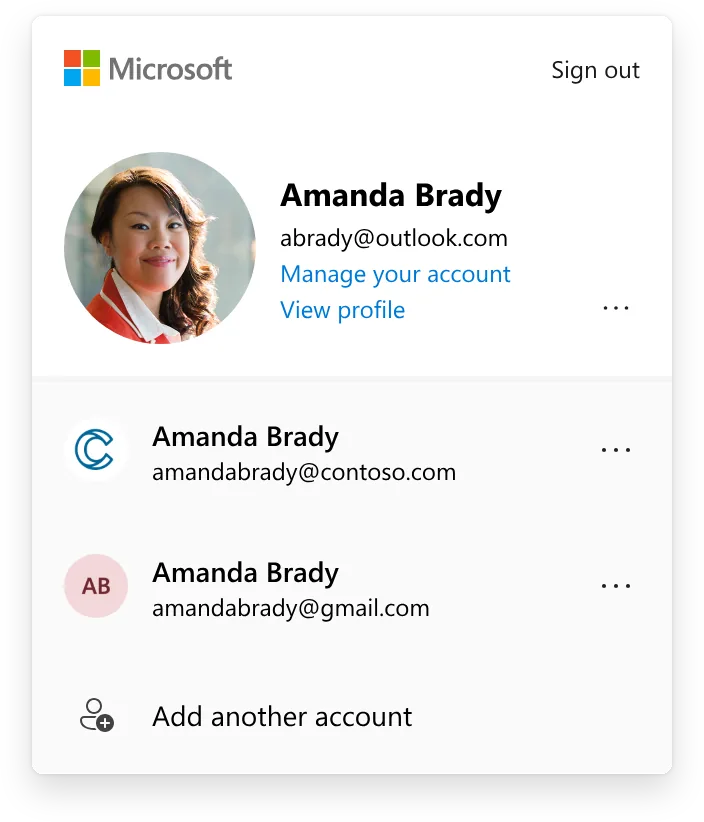
Consumer
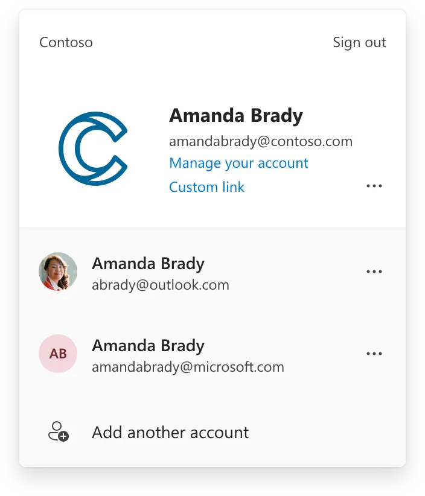
Commercial
The strategic question
“How might we make a high-traffic identity surface clearly show who you are and what you can do, and adapt to every kind of user, without fragmenting into four different experiences?”
My role
I led design for the sprint, partnering with PM, engineering, and research. I owned the framework, the segment-specific treatments, and the principles that let other teams (including Growth's experiments) build on the surface without breaking it.
Principles that guided the work
1 · Clear and concise
People don't linger here. Show only what helps now, and link out for the rest. It's a focused launcher, not an entitlements dashboard.
2 · Predictable controls, clean hierarchy
Make interactive elements obvious and consistent; keep the rest visually quiet. No novelty that breaks recognition on a surface people use reflexively.
3 · A consistent place for value
Give plan value one predictable home: what you have, where it helps, and what the next tier unlocks. Don't scatter it across the panel.
The framework: a fixed frame with a flexible core
The core move was deciding, explicitly, what stays fixed and what adapts. It's the same systems instinct that keeps a platform coherent as it grows.
Fixed: the identity backbone
- Account information
- Switch account
- Sign out
The parts that are about who you are stay consistent everywhere the surface appears.
Adaptive: the contextual core
A single flexible slot renders the most useful thing for that person: plan benefits, a value or upgrade message, or key account alerts. That one decision let one component serve four very different states without splintering, and it gave Growth a consistent space to experiment.
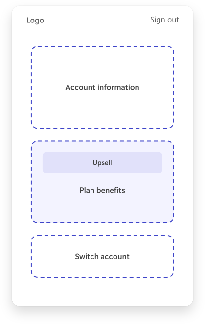
Flexible core surfacing an upsell
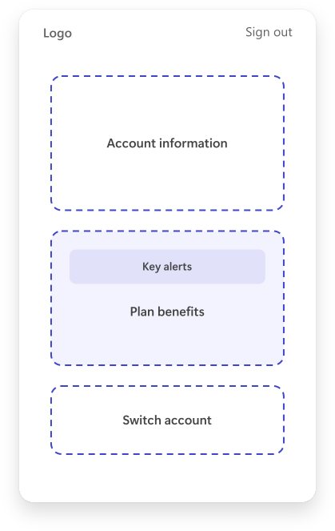
Same frame surfacing key alerts
Designing for every identity state
The flexible core let one surface personalize itself to each kind of user, without ever feeling like four disconnected designs.
Consumer · Personal & Family
Shifted the emphasis from raw account usage to the value the plan already includes, and made it easier to manage. A selectively-surfaced area handles key action items. Shown in the right context, the right next action both helped users and lifted conversion.
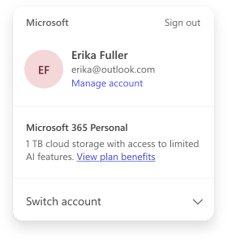
Plan value, foregrounded
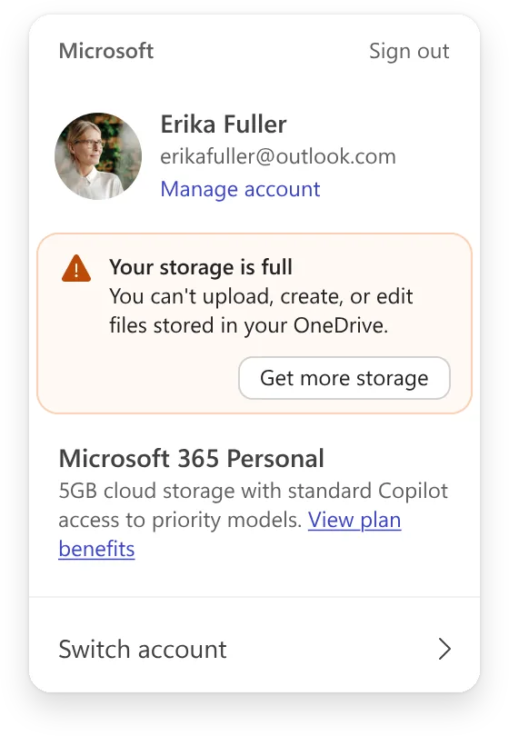
With a key action item surfaced
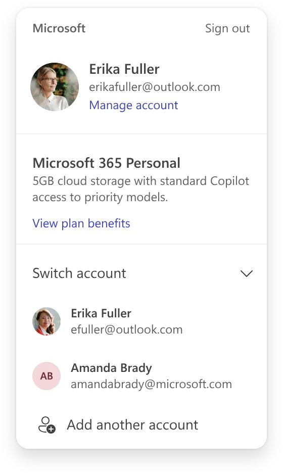
Switch account, expanded
Consumer · Basic & Free
A persistent value section, consistent no matter which product opened the Me Control. It lives in the flexible core, which gives Growth one comparable surface to test content and visuals.
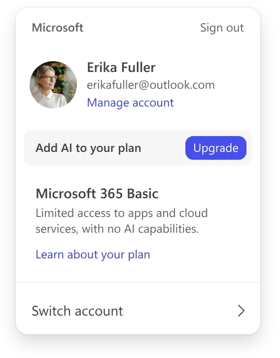
Commercial · Free (no Copilot license)
Led with a benefit-led message about what a more capable plan unlocks, while stating the current plan plainly. The value reads clearly without hiding what the user has today. (Two copy directions were tested.)
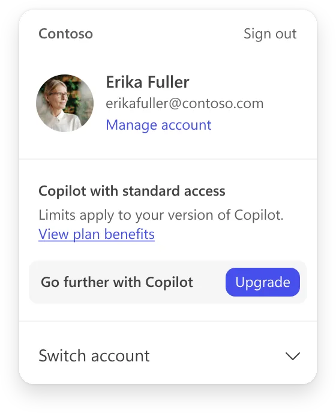
Commercial · Premium
Kept it clean and confident: surface the capabilities they're already entitled to, and offer an easy path to explore the rest. A reminder of value, not a sales pitch.
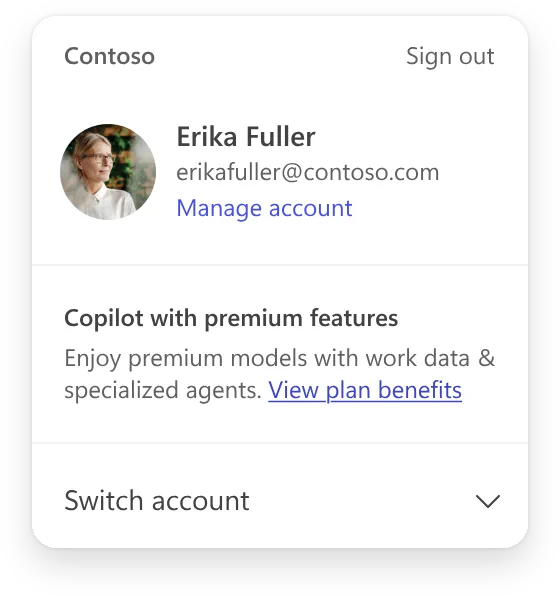
Mobile
On mobile, the Me Control surfaces as a bottom sheet. The fixed frame and flexible core carry over, tuned for the smaller screen.
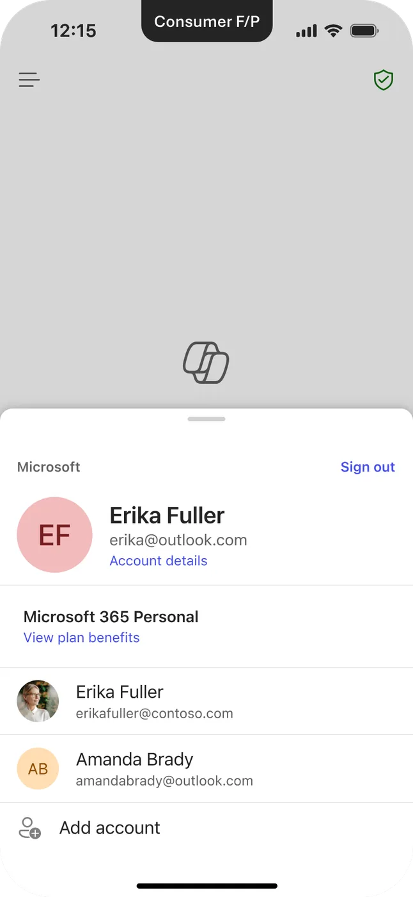
Consumer · Personal & Family
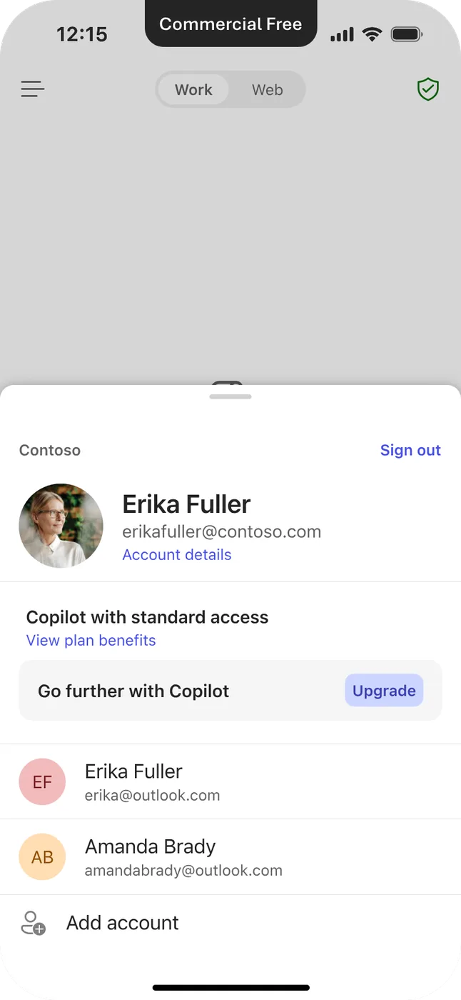
Commercial · Free
Impact
The result: one identity framework that reads clearly for every user, makes license and access state visible on a surface people already trust, and gives Growth one place to communicate value, all without turning a calm surface into a dashboard.
What I learned
On an identity surface, restraint is the craft. The hardest calls weren't what to add. They were what to leave out, so the panel stayed instantly recognizable. A flexible frame beats a bespoke screen per segment: one surface that respects very different people yet still feels like one product. And on the surfaces people trust most, growth and trust have to point the same way.